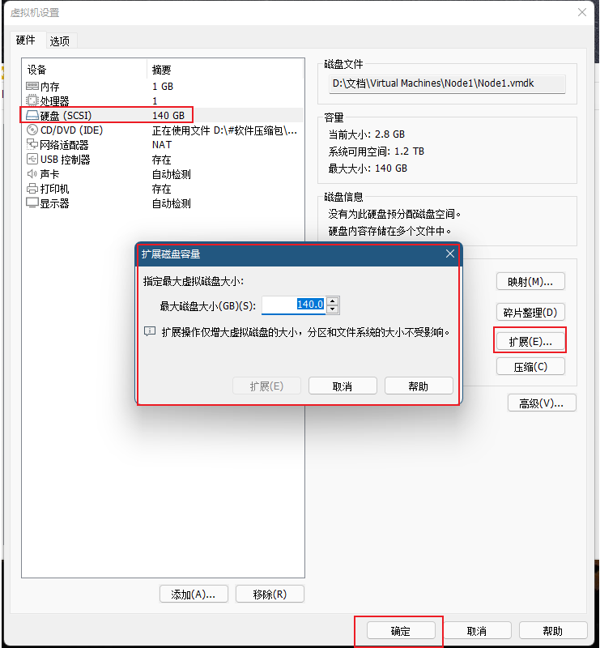
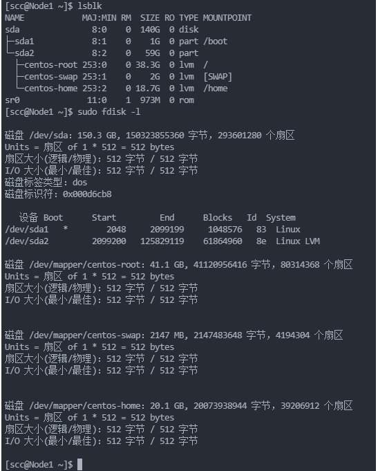
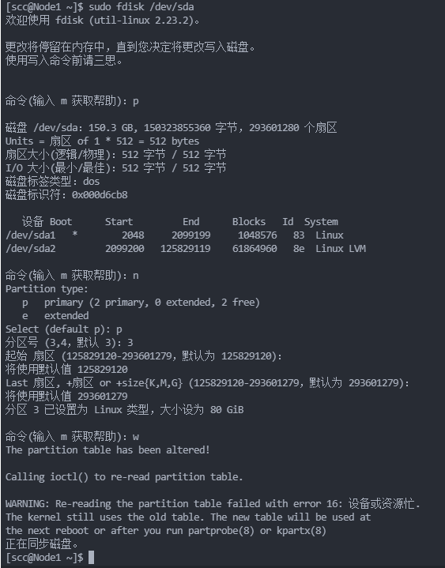

SYSU-SCC的选拔赛搭建系统题，因为升学计划改变，没有接着做优化题，最后也没有加入超算队，但从这些题目中学习了很多知识。记录一下这些非常好的集群入门题。
概览
超算集群比赛，首先要做的事情当然是组集群。机器硬件配好了，系统软件也要跟上来！在这部分的任务里，我们希望你使用虚拟机构建集群，并准备一些系统软件（例如编译器和库）。最后，你需要在集群上编译一个真实的应用程序。
这些任务要求你需要熟悉 Linux 的相关操作（不懂也没关系，按着我们材料的学习路径自行学习即可）。你不必完成所有任务。我们在下表中列出了建议，“R”为“建议完成”和“O”为“可选”。
| task | 大一/大二 | 大三/大四 | 想要成为集群的维护者 |
|---|---|---|---|
| task 1 | r | r | r |
| task 2 | r | r | r |
| task 3 | r | r | r |
| task 4 | r | r | r |
| task 5 | r | r | r |
| task 6 | r | r | r |
| task 7 | o | r | r |
| task 8 | o | r | r |
| task 9 | o | r | r |
| task 10 | o | r | r |
| final task | o | o | r |
对该集群，我们期望的架构
一个集群一般包括高速网络，大容量存储设备，多核处理器，以及相关的系统软件，如分布式文件系统，编译器和库等软件。
在这个项目中，你的目标是构建一个小但完整的双节点集群，如下图所示：

Node 1 包含两个物理盘（实际上是两个虚拟盘），一个物理盘（挂载在/data/ 路径下）。一个物理盘（在/目录下）用于安装操作系统，另一个物理盘（在/data/目录下）作为数据盘存储其他的数据（如第三方库、计算数据等），Node 2 仅有一个包含操作系统的物理盘， Node 2 的 /data/路径会通过 NFS 把 Node 1 的 /data/ 挂载过来。这样的设计能让两个节点共享 /data/ 目录下的数据。
提示
我们假设你可能没有足够的硬件来部署真实的集群。因此，你可以使用虚拟机进行下面的任务。当然，我们也欢迎你使用真正的硬件来完成以下任务。
在下面的所有任务中，我们将为你提供目标和相应的TODO列表。此外，我们还提供一些提示，并希望你顺利完成这些任务。如果你遇到一些困难，可以随意Google。如果觉得自己遇到了难于解决的问题，可以随时向我们提问。不要闭门造车！
如何提交
你不需要提交一个额外的报告，你只需要完成下面的 TODO ，并直接相关信息填在该 README.md 上即可。
对于Todo列表中的每个项目，你可以放置包含命令的代码块。如果需要，可以附加相关的屏幕截图以证明你成功完成了该任务。此外，你还可以撰写笔记以解释详细信息。
TIPS: 一般来说，把命令和log直接贴出来能够让我们对你所做的事情有更清晰的认识，”talk is cheap, show me your code”，大多数无关紧要的步骤直接用代码块贴log（或者只贴命令）即可，可以仅在你觉得需要的部分放截图。
Task 1 ：设置一个计算节点，并安装操作系统
在本任务中，你需要在集群中设置一个标准的计算节点。
我们建议使用 VMware Workstation player 创建虚拟机。**VMware workstation player**可以免费下载使用，没有必要花时间寻找Pro版本。当然， 也可以用VirtualBox 或 virt-manager 。
为了安装和设置一个标准的计算节点，你需要：
- 在虚拟机上安装一个操作系统
- 你可以选择 CentOS 7 , CentOS 8 或者 Debian 10, Debian 11 作为操作系统。
- TODO：解释你选择的理由？不存在标准答案，说你自己的理解即可。
- 把系统盘的大小设置在大概 25 GB 就够了。
- 设置用户名时，我们推荐把用户名设置为
scc。
- 通过 OS 自带的包管理器（如
yum或apt）安装一些必要的软件- 安装一些必要的软件： gcc/g++/gfortran/nfs-utils/tmux/htop/vim/git
- 你还可以安装一些其他你喜欢的软件。
- TODO：你可以简单说说你为啥喜欢这些软件
- 把该计算节点的 hostname 设置为
node1- 如何保证该设置的效果重启后还能生效？
- 关闭一些无用的服务
- 例如： firewall/SELinux
- TODO：为什么我们说这些服务是没用的，关闭他们有什么好处？
- TODO：如何关闭服务？如何保证已关闭的服务不会开机自启？
- TODO：你觉得还有什么服务是没用的吗？
- （可选）编写一个脚本把上面的这些琐碎事情自动化，并用这个脚本一键初始化 node2
提交
TODO: 你需要添加一些详细的信息，说明你如何完成上面的任务。
我选择的是centos7，因为centos是从红帽企业版中抽离出的源码再次编译而成的，具有使用简单，兼容性好等优点。相较于debian，其使用了企业版源码，不会像debian一样使用一些不严谨的驱动程序代码造成驱动安装问题。而使用centos7而非centos8的原因是8已经停止了维护，而7还在维护。
我喜欢这些软件的原因是我经常使用他们，他们能够帮助我完成很多工作。
修改/etc/hostname文件内容即可保证其在重启后依然生效。
关闭服务
因为我们只是在内网使用，无需加强安全防护，如果不关闭的话在进行操作的时候会造成一些麻烦。
通过下列指令即可关闭服务，同时将其从开机自启项中移除
systemctl stop firewalld.service systemctl disable firewalld.service sed -i 's/SELINUX=enforcing/SELINUX=disabled/g' /etc/selinux/configiptables也可以关掉
脚本内容如下
sed -i 's/ONBOOT=no/ONBOOT=yes/g' /etc/sysconfig/network-scripts/ifcfg-ens33 service network restart rm -f /etc/hostname echo Node2 > /etc/hostname yum install wget gcc gcc-c++ gdb make git net-tools traceroute -y systemctl stop firewalld.service systemctl disable firewalld.service sed -i 's/SELINUX=enforcing/SELINUX=disabled/g' /etc/selinux/config reboot
Task 2: 设置node2，测试网络，测试 ssh 链接
在本任务中，你需要设置第二个计算节点 node2，配置与 node1 相同。此外，你还需要测试 node1 和 node2 之间的网络。
- 设置
node2，node2和node1配置一样- 你可以直接复制
node1的系统镜像，也可以重复node1上的操作。 - 注意:
node1和node2需要有相同的用户名，设置 hostname 的时候需要设置成node2
- 你可以直接复制
- 找到并查看
node1和node2上的ip地址和路由表。- Tips: 学习使用命令
ifconfig/ip/…
- Tips: 学习使用命令
- 测试
node1和node2之间的网络是否连通。- Tips: 学习使用命令
ping/traceroute
- Tips: 学习使用命令
- 学习使用
ssh- TODO: 从物理机，使用
ssh直接连接node1和node2操作这两个节点 ，而不使用 GUI 界面 - TODO: 在
node1上 使用ssh连接到node2 - TODO: 在
node2上 使用ssh连接到node1 - TODO: 配置免密登陆，让物理机能够不需要输入密码就能登陆
node1和node2 - TODO: 配置免密登陆，让
node1和node2之间可以免密登陆- Tips: 学习使用私钥登陆，ssh 相关教程
- TODO: 从物理机，使用
- 学习一个配置文件
/etc/hosts- 在前面的操作中，需要经常输入虚拟机的ip地址，有没有办法可以偷懒不去记？
- 配好后，你应该可以在
node1上直接输入ssh node2就可以连接node2. - 或者在
node1上直接ping node2就可以测试node1和node2之间的网络
- 配好后，你应该可以在
- 在前面的操作中，需要经常输入虚拟机的ip地址，有没有办法可以偷懒不去记？
提交
TODO: 你需要添加一些详细的信息，说明你如何完成上面的任务。
按照脚本设置即可。
输入ifconfig指令，查看node1和node2的ip地址，分别为192.168.8.130和192.168.8.131
通过ping和traceroute指令进行网络连通性的测试


使用ssh
通过vscode的ssh进行两个节点的连接，从而实现远程终端控制+文件传输。如果只进行远程终端控制，通过如下指令即可完成。
ssh scc@192.168.8.130 ssh scc@192.168.8.131对于node1和node2的相互连接，通过上面的指令即可完成。
免密登录需要先添加公钥，以node1免密登录node2为例：首先在终端输入ssh-keygen，然后ssh-copy-id scc@192.168.8.131，即可实现node1到node2的免密登录。对于node2，将第二步的ip地址换为node1的ip地址即可。而对于物理机，第二步需要将指令分别应用于node1和node2的ip地址。

对于windows系统，可能会提示ssh-copy-id这一函数未定义，在终端执行如下指令。
function ssh-copy-id([string]$userAtMachine, $args){ $publicKey = "$ENV:USERPROFILE" + "/.ssh/id_rsa.pub" if (!(Test-Path "$publicKey")){ Write-Error "ERROR: failed to open ID file '$publicKey': No such file" } else { & cat "$publicKey" | ssh $args $userAtMachine "umask 077; test -d .ssh || mkdir .ssh ; cat >> .ssh/authorized_keys || exit 1" } }
配置文件
/etc/hosts使用管理员权限在/etc/hosts这一文件尾加上下面的语句
192.168.8.131 node2 192.168.8.130 node1实现效果如下：

试试ping指令：

Task 3: 在 node1 上增加一个大容量存储设备
目前 node1 和 node2 的系统盘都挺小的，在这个任务中，你需要在 node1 上增加一个比较大的盘（80GB），后面我们会把这一块盘通过 NFS 分享给 node2 使用。
- 在
node1上增加一块盘- 在虚拟机管理软件上操作一下就可以了。
- 在
node1上，可以使用命令lsblk/fdisk -l去检查有没有新的盘加进来。
- 在新的盘上进行分区
- 学习命令
fdisk - 一般情况下，只需要把整个盘都划为一个分区。
- 同样可以使用命令
lsblk/fdisk -l去检查由于分区而增加的设备。
- 学习命令
- 把刚刚分好的区进行格式化，格式化成 ext4 文件系统。
- 学习命令
mkfs.ext4
- 学习命令
- 把格式化好的分区挂载到
node1上的/data/路径下 。- 学习命令
mount/umount - 使用命令
df -h检查挂载结果
- 学习命令
- 使用非特权用户（如
scc）访问/data路径- 学习使用命令
chown/chmod - 路径
/data需要能够被普通用户（如scc用户）可读可写。 - 学习 Linux 中的权限模型
- 在后面的任务中，你要尽量避免直接使用 root 用户 和
sudo命令。- 除了一些必须使用root用户的操作
- 学习使用命令
在后面的任务中，我们将只在 /data 下操作、存储数据。
提交
TODO: 你需要添加一些详细的信息，说明你如何完成上面的任务。
扩容
- 首先将虚拟机关闭，进行node1的虚拟机设置，将其最大磁盘大小增加80GB。

- 通过命令查看增加的磁盘空间。

通过fdisk进行新增的80GB的磁盘的设置。

对磁盘进行挂载并进行格式化，把格式化好的分区挂载到
node1上的/data/路径下，指令如下。mkfs.ext4 /dev/sda3 cd / mkdir /data mount /dev/sda3 /data挂载后的效果如下：

对所有用户赋予对/data读写执行的权限，并将修改/data的权限交给scc：
chmod a+rwx /data chown -R scc:scc /data通过ls -l进行验证，可以看到任意用户都有了对/data进行rwx的权限，同时scc成为了这一文件夹的用户。

Task 4: 学习 Linux 中的软件环境
我们将尝试在没有root和sudo的情况下配置、安装和运行一些软件。本任务将尝试让您详细了解Linux中某些环境变量的影响。在下一个任务中，我们将使用Environment Module来管理环境。
在这个任务中，你需要在没有root的情况下安装最新版本的CMake。
安装最新版本的 CMake
下载CMake的源码到
/data/software/source/并且解压- 阅读
README去看看怎么从源码编译安装
- 阅读
编译源代码并安装
- 你可以使用系统包管理器安装一些缺失的cmake依赖
- 您必须将CMake安装到
/data/software/install/cmake/${version}，${version}是 cmake 的版本号 - 编译是一个计算密集型的过程，另外它可能需要较大的内存。因此，你可以临时扩展虚拟机的CPU /内存。
看看命令
cmake --version的结果来检查cmake的版本- 如何不需要绝对路径，直接只用
cmake命令？ - 看看命令
which cmake的结果 - TIPS：看看环境变量
PATH
- 如何不需要绝对路径，直接只用
了解其他环境变量
- 仔细阅读该部分学习材料：link
- 这些环境变量，在后面配置 modulefile 的时候非常重要
- 回答问题：类似于
PATH的环境变量，把自己的路径加载最前面和最后面，有什么区别吗？为什么？export PATH=/path/to/..:${PATH}和export PATH=${PATH}:/path/to/...
- （optional）还有没有什么重要的环境变量？可以介绍一下
- 例子：pkg-config 是什么？有什么作用？有命令行参数或环境变量去控制搜索路径吗？
- 例子：cmake 如何 find package ? 有命令行参数或环境变量去控制搜索路径吗？
- 例子：python 中的 import package，是从什么路径寻找的？如果自己手动操作安装到非默认路径，如何让 python 找到你的package？（tips：
PYTHONHOME和PYTHONPATH环境变量） - …
提交
TODO: 你需要添加一些详细的信息，说明你如何完成上面的任务。
通过wget下载CMake Download | CMake 的源码到
/data/software/source/并且解压tar -zxvf cmake-3.22.2.tar.gz编译源码并安装
./bootstrap --prefix=/data/software/install/cmake/3.22.2 make -j2 make install查看cmake版本
- 首先用绝对路径查看

通过源码安装Environment Modules软件包，后面也用得着。
wget https://jaist.dl.sourceforge.net/project/modules/Modules/modules-5.0.1/modules-5.0.1.tar.gz --no-check-certificate tar -zxvf modules-5.0.1.tar.gz cd modules-5.0.1 ./configure --prefix=/data/software/install/modules/5.0.1 make && make install source /data/software/install/modules/5.0.1/profile.sh然后我们进行modulefile的配置，将其添加到环境变量中。
#%Module1.0 proc ModulesHelp { } { global version prefix puts stderr "\t Loads the environment for my installed cmake" } module-whatis "Loads the environment for my installed cmake" set CMAKE_HOME /data/software/install/cmake/3.22.2 setenv CMAKE_HOME /data/software/install/cmake/3.22.2 prepend-path PATH $CMAKE_HOME/bin prepend-path LIBRARY_PATH $CMAKE_HOME/lib prepend-path LD_LIBRARY_PATH $CMAKE_HOME/lib prepend-path LD_INCLUDE_PATH $CMAKE_HOME/include prepend-path MANPATH $CMAKE_HOME/share/man然后我们module load cmake/3.22.2，就可以直接查看cmake版本了。

加在前面的话会优先使用这一环境变量，先在这一环境变量中找到后就不会去找后面的了。区别就是优先级的不同。
Task 5: 安装HPC集群必备软件
我们将会配置、安装一些HPC集群的必备软件（尽量避免使用root权限）。在本部分任务中，我们需要自己编写脚本管理软件环境，或使用 Environment Module 来管理我们的软件，并初步学习HPC集群常见的软件环境管理方法。
Environment Module 是控制 Shell 当前会话环境变量的应用程序。例如，使用 Environment Module 加载最新的 gcc，gcc 的路径会加到 PATH 环境变量最前面了，由此，旧的 gcc 命令就能被新的所覆盖。在其他情况下，某些运行时所需的库需要将其路径加到 LD_LIBRARY_PATH 中，这些使用 Environment Module 都能轻松处理。
- 首先安装Environment Module 模块！
- Environment Module 有好几个以不同语言实现的变体。我们推荐安装系统包管理器提供的版本（通常用TCL编写）。
你的目标: 创建一些 modulefiles，让非特权用户可以加载常用的编译器、第三方库、应用等。为了让集群存储环境更为规范，我们要求所有的软件都需要安装在 /data/software/install 下，并且遵循一定的规则（如gcc 7.5.0 安装在 /data/software/install/gcc/7.5.0/下) ，不同版本的软件需要有独立的目录。
- CMake 3.x
- GNU Compiler Collection 7.x + 10.x
- 使用包管理器默认提供的编译器(通常也是gcc)从源代码编译gcc。不要忘记启用对C、c++和Fortran的语言支持。
- Intel Parallel Studio XE 2018 + Intel oneAPI toolkit (Intel oneAPI Base Toolkit + Intel oneAPI HPC Toolkit)
- Intel Parallel Studio 2018.4 download link
- Ask us for the license
- Intel oneAPI Toolkit download link
- TIPS: use env2 to convert the environment script of Intel PSXE.
- OpenMPI 1.x + 3.x
- CUDA Toolkit 11.x (不需要安装驱动)
你可以使用类似下面的命令检查环境，这里是一个 gcc 的例子，你应该用类似的命令检查所有你安装的软件，同时最好附带部分例子表明你安装的软件能够正常使用，如编译一个hello_world.c 。
# use gcc provided by the system package manager
which gcc
gcc --version
# use gcc 7.5.0
module load gcc/7.5.0
which gcc
gcc --version
# compile a hello_world.c and run to check the gcc compiler
module unload gcc/7.5.0
# use gcc 10.3.0
module load gcc/10.3.0
which gcc
gcc --version
# compile a hello_world.c and run to check the gcc compiler
module unload gcc/10.3.0其他材料：
- Environment Module
- Spack 是下一代的 HPC 集群软件管理工具，有空可以了解一下！
提交
TODO: 你需要添加一些详细的信息，说明你如何完成上面的任务。
Environment Module以及cmake的安装在task4中介绍过了，这里就不重复阐述了。
GNU Compiler Collection
首先进行编译依赖的安装
mkdir /data/software/install/gmp mkdir /data/software/install/gmp/6.1.0 tar jxvf gmp-6.1.0.tar.bz2 cd gmp-6.1.0 ./configure --prefix=/data/software/install/gmp/6.1.0 make -j4 && make installmkdir /data/software/install/mpfr mkdir /data/software/install/mpfr/3.1.4 tar jxvf tar jxvf mpfr-3.1.4.tar.bz2 cd mpfr-3.1.4 ./configure --prefix=/data/software/install/mpfr/3.1.4 make -j4 && make installmkdir /data/software/install/mpc mkdir /data/software/install/mpc/1.0.3 tar zxvf mpc-1.0.3.tar.gz cd mpc-1.0.3 ./configure --prefix=/data/software/install/mpc/1.0.3 make -j4 && make installmkdir /data/software/install/isl mkdir /data/software/install/isl/0.16.1 tar jxvf isl-0.16.1.tar.bz2 cd isl-0.16.1 ./configure --prefix=/data/software/install/isl/0.16.1 make -j4 && make install然后加入环境变量
export LD_LIBRARY_PATH=$LD_LIBRARY_PATH:/data/software/install/isl/0.16.1/lib:/data/software/install/mpc/1.0.3/lib:/data/software/install/mpfr/3.1.4/lib:/data/software/install/gmp/6.1.0/libexport LD_LIBRARY_PATH=$LD_LIBRARY_PATH:/usr/local/zlib-1.2.11/lib:/data/software/install/isl/0.16.1/lib:/data/software/install/mpc/1.0.3/lib:/data/software/install/mpfr/3.1.4/lib:/data/software/install/gmp/6.1.0/lib7.3.0
wget http://mirrors.aliyun.com/gnu/gcc/gcc-7.3.0/gcc-7.3.0.tar.gz mkdir /data/software/install/gcc/7.3.0 tar zxvf gcc-7.3.0.tar.gz cd gcc-7.3.0 ./configure --prefix=/data/software/install/gcc/7.3.0 --enable-multilib --enable-languages=c,c++,fortran --enable-threads=posix --enable--long-long make&make install进行配置
#%Module1.0 proc ModulesHelp { } { global version prefix puts stderr "\t Loads the environment for my installed gcc" } module-whatis "Loads the environment for my installed gcc" set GCC_HOME /data/software/install/gcc/7.3.0 setenv GCC_HOME /data/software/install/gcc/7.3.0 prepend-path PATH $GCC_HOME/bin prepend-path LIBRARY_PATH $GCC_HOME/lib prepend-path LD_LIBRARY_PATH $GCC_HOME/lib prepend-path LD_INCLUDE_PATH $GCC_HOME/include prepend-path MANPATH $GCC_HOME/share/man进行测试

10.3.0
wget http://mirrors.aliyun.com/gnu/gcc/gcc-10.3.0/gcc-10.3.0.tar.gz tar zxvf gcc-10.3.0.tar.gz cd gcc-10.3.0 ./configure --prefix=/data/software/install/gcc/10.3.0 --enable-multilib --enable-languages=c,c++,fortran --enable-threads=posix --enable--long-long make && make install然后进行配置
#%Module1.0 proc ModulesHelp { } { global version prefix puts stderr "\t Loads the environment for my installed gcc" } module-whatis "Loads the environment for my installed gcc" set GCC_HOME /data/software/install/gcc/10.3.0 setenv GCC_HOME /data/software/install/gcc/10.3.0 prepend-path PATH $GCC_HOME/bin prepend-path LIBRARY_PATH $GCC_HOME/lib prepend-path LD_LIBRARY_PATH $GCC_HOME/lib prepend-path LD_INCLUDE_PATH $GCC_HOME/include prepend-path MANPATH $GCC_HOME/share/man测试

Intel
Intel Parallel Studio 2018.4(获取license)
tar zxvf parallel_studio_xe_2018_update4_cluster_edition.tgz cd parallel_studio_xe_2018_update4_cluster_edition bash install.shsource compilervars.sh -arch intel64 -platform linux配置
#%Module4.6 proc ModulesHelp { } { global version prefix puts stderr "\t Loads the environment for my installed parallel studio" } module-whatis "Loads the environment for my installed parallel studio" set STUDIO_HOME /data/software/install/parallel_studio_xe/2018.4 setenv STUDIO_HOME /data/software/install/parallel_studio_xe/2018.4 source-sh source /data/software/install/parallel_studio_xe/2018.4/bin/compilervars.sh -arch intel64 -platform linux验证

Intel oneAPI Base Toolkit
wget https://registrationcenter-download.intel.com/akdlm/irc_nas/18487/l_BaseKit_p_2022.1.2.146_offline.sh bash ./l_BaseKit_p_2022.1.2.146_offline.sh -a --silent --install-dir /data/software/install/oneapi/base --eula accept配置
#%Module4.6 proc ModulesHelp { } { global version prefix puts stderr "\t Loads the environment for my installed oneapi" } module-whatis "Loads the environment for my installed oneapi" set ONEAPI_HOME /data/software/install/oneapi/base setenv ONEAPI_HOME /data/software/install/oneapi/base source-sh bash /data/software/install/oneapi/base/setvars.sh --forceIntel oneAPI HPC Toolkit
bash install.sh --silent --eula accept
对于openmpi，我装了1.6.5和3.1.0两个版本。
安装openmpi-3.1.0
wget https://download.open-mpi.org/release/open-mpi/v3.1/openmpi-3.1.0.tar.gz tar zxvf openmpi-3.1.0.tar.gz cd openmpi-3.1.0 ./configure --prefix=/data/software/install/openmpi/3.1.0/ mkdir /data/software/install/openmpi/3.1.0 make && make install配置modulefile文件3.1.0
#%Module1.0 proc ModulesHelp { } { global version prefix puts stderr "\t Loads the environment for my installed openmpi" } module-whatis "Loads the environment for my installed openmpi" set MPI_HOME /data/software/install/openmpi/3.1.0 setenv MPI_HOME /data/software/install/openmpi/3.1.0 prepend-path PATH $MPI_HOME/bin prepend-path LIBRARY_PATH $MPI_HOME/lib prepend-path LD_LIBRARY_PATH $MPI_HOME/lib prepend-path LD_INCLUDE_PATH $MPI_HOME/include prepend-path MANPATH $MPI_HOME/share/man安装openmpi-1.6.5
wget https://download.open-mpi.org/release/open-mpi/v1.6/openmpi-1.6.5.tar.gz tar zxvf openmpi-1.6.5.tar.gz cd openmpi-1.6.5 mkdir /data/software/install/openmpi/1.6.5 ./configure --prefix=/data/software/install/openmpi/1.6.5 make && make install配置modulefile文件1.6.5
#%Module1.0 proc ModulesHelp { } { global version prefix puts stderr "\t Loads the environment for my installed openmpi" } module-whatis "Loads the environment for my installed openmpi" set MPI_HOME /data/software/install/openmpi/1.6.5 setenv MPI_HOME /data/software/install/openmpi/1.6.5 prepend-path PATH $MPI_HOME/bin prepend-path LIBRARY_PATH $MPI_HOME/lib prepend-path LD_LIBRARY_PATH $MPI_HOME/lib prepend-path LD_INCLUDE_PATH $MPI_HOME/include prepend-path MANPATH $MPI_HOME/share/man
CUDA Toolkit 11.0
wget http://developer.download.nvidia.com/compute/cuda/11.0.2/local_installers/cuda_11.0.2_450.51.05_linux.run sh cuda_11.0.2_450.51.05_linux.run要进行路径的修改，装在/data/software/install/cuda/11.0，由于不需要安装驱动，可以取消掉部分选项。安装完成后的界面如下

配置
#%Module1.0 proc ModulesHelp { } { global version prefix puts stderr "\t Loads the environment for my installed cuda" } module-whatis "Loads the environment for my installed cuda" set CUDA_HOME /data/software/install/cuda/11.0 setenv CUDA_HOME /data/software/install/cuda/11.0 prepend-path PATH $CUDA_HOME/bin prepend-path LIBRARY_PATH $CUDA_HOME/lib64 prepend-path LD_LIBRARY_PATH $CUDA_HOME/lib64 prepend-path LD_INCLUDE_PATH $CUDA_HOME/include prepend-path MANPATH $CUDA_HOME/doc/man验证安装是否成功

Task 6: Network File System
现在所有软件都安装在 node1 的 /data/software/install 目录下，我们现在将通过 Network File System 将目录 /data 分享到 node2 上，这样 node2 就不用重复安装这些软件。（类似的做法可以扩展到更多规模的集群）。
你的任务：
- 在
node1上将目录/data导出成 Network File System。- 你可以在
node2上使用命令showmount -e node1检查。
- 你可以在
- 在
node2上把node1的/data挂载到本地的/data目录 - 在
node2上检查软件环境是否正常。- 在
node2上使用脚本导入/data中的软件，并且做一些事情使用这些软件确保正常。
- 在
- TODO: 对于很大很大规模的集群，NFS 还会好使吗？
- 如果不，可以推荐一些其他的分布式文件系统，并且简单介绍一下其优劣。
- 可以自行了解现在超算的存储架构和性能 io500
提交
TODO: 你需要添加一些详细的信息，说明你如何完成上面的任务。
在node1上，修改/etc/exports中的内容如下
/data 192.168.8.131(insecure,rw,async,no_root_squash)使设置生效
exportfs -rv在两个节点上，都将nfs设置为开机自启动
systemctl start nfs systemctl start rpcbind systemctl enable nfs systemctl enable rpcbind service nfs start service rpcbind start然后在node2上查看
showmount -e node1可以看到nfs共享目录：

在node2上进行网络挂载并通过df -h进行验证，这一步需要root权限。
sudo mount -t nfs -o nolock node1:/data /data可以看到挂载成功，目录中的文件可用。

尝试使用node1配置好的modules，在~/.bashrc文件尾加入
export MODULEPATH=/data/software/modules然后source ~/.bashrc，尝试使用openmpi，可以看到此时node2已经可以使用node1安装好的软件了。

Task 7: 【测试网络性能】在集群上跑 OSU benchmark
在这部分，你需要运行 osu-micro-benchmark 去测量node1 和 node2 之间的网络带宽和延迟。
这部分任务只是让你熟悉MPI的使用和测试，不需调参获得更好的结果。
你的任务：
- 下载源代码 osu-micro-benchmark 并安装
- 使用 Open MPI 在两个进程上测试
ose_bwandosu_latency- 确保一个进程在
node1另一个进程在node2.，可以通过mpirun ..... hostname来测试
- 确保一个进程在
- 使用 Intel MPI (包含在 Intel Parallel Studio 中) 在两个进程上测试
ose_bwandosu_latency- 确保一个进程在
node1另一个进程在node2.
- 确保一个进程在
- 回答问题：现在超算一般用的是什么网络？在不同的网络上跑这些benchmark，你猜测结果分别是多少呢？
- （可选）思考：如果软件环境和osu benchmark没有装在
/data下，而是在node1的系统盘里（即这些内容只能在 node1 上访问，node2 上不能直接访问），执行这些多节点的程序可能会遇到什么问题？（可以自己试试看）
提交
TODO: 你需要添加一些详细的信息，说明你如何完成上面的任务。
下载
wget https://mvapich.cse.ohio-state.edu/download/mvapich/osu-micro-benchmarks-5.7.1.tgz tar zxvf osu-micro-benchmarks-5.7.1.tgz测一下open mpi，测试指令
cd /data/software/source/osu-micro-benchmarks-5.7.1 ./configure CC=/data/software/install/openmpi/3.1.0/bin/mpicc CXX=/data/software/install/openmpi/3.1.0/bin/mpicxx --prefix=/data/software/install/osu/5.7.1 make && make install cd /data/software/source/osu-micro-benchmarks-5.7.1/mpi/pt2pt $(which mpirun) -np 2 -machinefile /data/hosts hostname $(which mpirun) -np 2 -machinefile /data/hosts ./osu_bw $(which mpirun) -np 2 -machinefile /data/hosts ./osu_latency机器名测试

MPI带宽测试

延迟测试

测一下intel mpi，测试指令
cd /data/software/source/osu-micro-benchmarks-5.7.1 ./configure CC=/data/software/install/oneapi/base/mpi/2021.5.1/bin/mpicc CXX=/data/software/install/oneapi/base/mpi/2021.5.1/bin/mpicxx --prefix=/data/software/install/osu/5.7.1 make uninstall make && make install cd /data/software/source/osu-micro-benchmarks-5.7.1/mpi/pt2pt $(which mpirun) -ppn 1 --hosts node1,node2 hostname $(which mpirun) -ppn 1 --hosts node1,node2 ./osu_bw $(which mpirun) -ppn 1 --hosts node1,node2 ./osu_latency机器名测试

MPI带宽测试

延迟测试

一般使用的是 InfiniBand 网络。 主流网络互连技术包括以太网、FC和InfiniBand。FC是为实现存储互联而设计的存储专属网络，由于其技术局限性，迄今只在存储互联领域得到广泛应用。以太网与InfiniBand同为开放网络互连技术，以太网更侧重网络协议的通用性，而InfiniBand拥有大幅领先于以太网和FC性能的优势，同时是具备软件定义网络(soft defined network,SDN)属性的智能网络。 因此我猜测在InfiniBand上跑benchmark带宽是最大的，延迟是最小的，而另外两种网络由于其局限性，性能表现会差一些。
会发生如下错误
bash: orted: command not found -------------------------------------------------------------------------- A daemon (pid 62171) died unexpectedly with status 127 while attempting to launch so we are aborting. There may be more information reported by the environment (see above). This may be because the daemon was unable to find all the needed shared libraries on the remote node. You may set your LD_LIBRARY_PATH to have the location of the shared libraries on the remote nodes and this will automatically be forwarded to the remote nodes. -------------------------------------------------------------------------- -------------------------------------------------------------------------- mpirun noticed that the job aborted, but has no info as to the process that caused that situation. --------------------------------------------------------------------------这是由于远程主机node2无法访问软件环境和osu benchmark导致的。
Task 8: 【测试磁盘性能】在集群上跑磁盘性能测试
在这部分，你需要运行 fio 对集群的存储设备的性能进行测试。
- 三个需要注意的选项：
--ioengine=libaio，选取该异步IO库可以尽可能压榨盘的性能。--direct=1，该选项可以跳过操作系统的cache，以测得真实性能。--rw=XXXX，这里选择read/write/randread/randwrite，分别对应顺序读、顺序写、随机读、随机写。
- 测试项一：测试写入、读取最大带宽（顺序，随机）
- 一般使用较大的块大小（如1MB）和较大的队列深度进行多线程测试。
- 测试项二：测试4K写入、读取最大IOPS （顺序，随机）
- 一般使用较大的队列深度进行多线程测试。
- 测试项三：测试4K写入、读取延时 （顺序，随机）
- 一般使用队列深度为1进行单线程测试。
你需要做的是：
- 在
node1上测试/data/下的顺序/随机 写入、读取带宽，写入、读取 IOPS，以及写入读取的延时 - 在
node2上测试/data/下的顺序/随机 写入、读取带宽，写入、读取 IOPS，以及写入读取的延时 - 尝试理解 fio 测试的日志含义，从而回答下面问题：
- 回答问题：在
node2上测试的结果和node1上的结果有哪些区别，原因可能是什么？ - 回答问题：现在比较常见的存储设备有哪几种？这几种存储设备的性能大致如何描述？
- 回答问题：在
- （optional）写个脚本自动搞定这个任务？
参考资料：link
提交
TODO: 你需要添加一些详细的信息，说明你如何完成上面的任务。
首先装一下fio
./configure --prefix=/data/software/install/fio make && make install对磁盘性能进行测试，首先创建文件夹
TEST_DIR=/data/fiotest mkdir -p $TEST_DIR使用 1 MB 的 I/O 块大小和至少 64 的 I/O 深度，通过执行具有多个（8 个或更多）并行数据流的顺序写入来测试写入吞吐量：
fio --name=write_throughput --directory=$TEST_DIR --numjobs=8 \ --size=10G --time_based --runtime=60s --ramp_time=2s --ioengine=libaio \ --direct=1 --verify=0 --bs=1M --iodepth=64 --rw=write \ --group_reporting=1随机写入吞吐量
fio --name=write_throughput --directory=$TEST_DIR --numjobs=8 \ --size=10G --time_based --runtime=60s --ramp_time=2s --ioengine=libaio \ --direct=1 --verify=0 --bs=1M --iodepth=64 --rw=randwrite \ --group_reporting=1使用 4 KB 的 I/O 块大小和至少 64 的 I/O 深度，通过执行随机写入来测试写入 IOPS：
fio --name=write_iops --directory=$TEST_DIR --size=10G \ --time_based --runtime=60s --ramp_time=2s --ioengine=libaio --direct=1 \ --verify=0 --bs=4K --iodepth=64 --rw=randwrite --group_reporting=1顺序写入IOPS
fio --name=write_iops --directory=$TEST_DIR --size=10G \ --time_based --runtime=60s --ramp_time=2s --ioengine=libaio --direct=1 \ --verify=0 --bs=4K --iodepth=64 --rw=write --group_reporting=1使用 1 MB 的 I/O 块大小和至少 64 的 I/O 深度，通过执行具有多个（8 个或更多）并行数据流的顺序读取来测试读取吞吐量：
fio --name=read_throughput --directory=$TEST_DIR --numjobs=8 \ --size=10G --time_based --runtime=60s --ramp_time=2s --ioengine=libaio \ --direct=1 --verify=0 --bs=1M --iodepth=64 --rw=read \ --group_reporting=1随机读取吞吐量
fio --name=read_throughput --directory=$TEST_DIR --numjobs=8 \ --size=10G --time_based --runtime=60s --ramp_time=2s --ioengine=libaio \ --direct=1 --verify=0 --bs=1M --iodepth=64 --rw=randread \ --group_reporting=1使用 4 KB 的 I/O 块大小和至少 64 的 I/O 深度，通过执行随机读取来测试读取 IOPS：
fio --name=read_iops --directory=$TEST_DIR --size=10G \ --time_based --runtime=60s --ramp_time=2s --ioengine=libaio --direct=1 \ --verify=0 --bs=4K --iodepth=64 --rw=randread --group_reporting=1顺序读取IOPS：
fio --name=read_iops --directory=$TEST_DIR --size=10G \ --time_based --runtime=60s --ramp_time=2s --ioengine=libaio --direct=1 \ --verify=0 --bs=4K --iodepth=64 --rw=read --group_reporting=1测试随机写入延迟时间。
fio --name=write_latency_test \ --directory=$TEST_DIR --filesize=10G \ --time_based --ramp_time=2s --runtime=1m \ --ioengine=libaio --direct=1 --verify=0 --randrepeat=0 \ --bs=4K --iodepth=4 --rw=randwrite顺序写入延迟
fio --name=write_latency_test \ --directory=$TEST_DIR --filesize=10G \ --time_based --ramp_time=2s --runtime=1m \ --ioengine=libaio --direct=1 --verify=0 --randrepeat=0 \ --bs=4K --iodepth=4 --rw=write测试读取延迟时间
fio --name=read_latency_test \ --directory=$TEST_DIR --filesize=10G \ --time_based --ramp_time=2s --runtime=1m \ --ioengine=libaio --direct=1 --verify=0 --randrepeat=0 \ --bs=4K --iodepth=4 --rw=randread顺序读取延迟
fio --name=read_latency_test \ --directory=$TEST_DIR --filesize=10G \ --time_based --ramp_time=2s --runtime=1m \ --ioengine=libaio --direct=1 --verify=0 --randrepeat=0 \ --bs=4K --iodepth=4 --rw=read清理：
rm $TEST_DIR/write* $TEST_DIR/read*
node1结果
顺序读取最大带宽为238661KiB/s，写入最大带宽为228462KiB/s。
随机读取最大带宽为94208KiB/s，写入最大带宽为99753KiB/s。
顺序读取最大IOPS：2985，顺序写入最大IOPS：3004。
随机读取最大IOPS：898，随机写入最大IOPS：902。
顺序读取延时：180.17，顺序写入延时：317.77。
随机读取延时：1938.17，随机写入延时：3629.74。
node2结果
顺序读取最大带宽为87888KiB/s，写入最大带宽为88064KiB/s。
随机读取最大带宽为79872KiB/s，写入最大带宽为81756KiB/s。
顺序读取最大IOPS：608，顺序写入最大IOPS：626。
随机读取最大IOPS：606，随机写入最大IOPS：624。
顺序读取延时：963.66，顺序写入延时：937.75。
随机读取延时：998.34，随机写入延时：1234.65。
尝试理解 fio 测试的日志含义，从而回答下面问题：
在
node2上测试的结果和node1上的结果有哪些区别，原因可能是什么？（1）node1上读写最大带宽要大于node2。
（2）node1上读写最大IOPS要大于node2
（3）node1上读写延时要小于node2。
可能原因是/data/是挂载在node1节点的磁盘上的，node2通过nfs进行磁盘的访问，存在一定的延时。另外虚拟机运行性能受到物理机运行状态的影响，在测试时具有不确定性。
现在比较常见的存储设备有哪几种？这几种存储设备的性能大致如何描述？
主要是两种，机械硬盘和固态硬盘。固态硬盘的优势在于读写速度都非常非常快，特别是零散的小文件的读取，性能要明显高于机械硬盘，而现在最新的PCIe 4.0 NVMe SSD性能已经达到了机械硬盘的几十倍，最明显的好处就是，应用启动快了，游戏加载快了，文件拷贝也快了。机械硬盘的优点在于价格便宜，数据可靠性更好一些，易于进行数据恢复。
Task 9: 【测试软件环境】在集群上编译一个真实应用
天气研究和预报模型（WRF，发音为”worf”）是一个主要用于数值天气预报（NWP）的高度并行，基于CPU的Fortran软件包。此应用程序是 ISC21 中的基准测试应用程序之一。(细节在这里)
在这个任务中，你只需要编译该应用即可。
这里有一些tips：
- 认真阅读 link
- 安装依赖并且使用 Environment Module 进行管理。
- 这些依赖包括 MPI, hdf5, netcdf (netcdf-c 和 netcdf-fortran)
- 编译时你需要选择 “dm+sm”
- 编译时间可能较久，从十几分钟到一小时不等。
- 你可以选择 gcc 编译器，也可以选择 intel 编译器。
你的目标是看到这样的log：
==========================================================================
build started: Fri Apr 9 18:44:39 EDT 2021
build completed: Fri Apr 9 19:53:47 EDT 2021
---> Executables successfully built <---
-rwxr-x--- 1 lcl_davidg iscscc-scinet 52523904 Apr 9 19:53 main/ndown.exe
-rwxr-x--- 1 lcl_davidg iscscc-scinet 52486664 Apr 9 19:53 main/real.exe
-rwxr-x--- 1 lcl_davidg iscscc-scinet 51479608 Apr 9 19:53 main/tc.exe
-rwxr-x--- 1 lcl_davidg iscscc-scinet 60223864 Apr 9 19:52 main/wrf.exe
==========================================================================提交
TODO: 你需要添加一些详细的信息，说明你如何完成上面的任务。
zlib
#%Module1.0 proc ModulesHelp { } { global version prefix puts stderr "\t Loads the environment for my installed zlib" } module-whatis "Loads the environment for my installed zlib" set ZLIB_HOME /data/software/install/zlib/1.2.11 setenv ZLIB_HOME /data/software/install/zlib/1.2.11 prepend-path PATH $ZLIB_HOME/bin prepend-path LIBRARY_PATH $ZLIB_HOME/lib prepend-path LD_LIBRARY_PATH $ZLIB_HOME/lib prepend-path LD_INCLUDE_PATH $ZLIB_HOME/include prepend-path MANPATH $ZLIB_HOME/share/manhdf55
#%Module1.0 proc ModulesHelp { } { global version prefix puts stderr "\t Loads the environment for my installed hdf5" } module-whatis "Loads the environment for my installed hdf5" set HDF5_HOME /data/software/install/hdf5/1.8.22 setenv HDF5_HOME /data/software/install/hdf5/1.8.22 prepend-path PATH $HDF5_HOME/bin prepend-path LIBRARY_PATH $HDF5_HOME/lib prepend-path LD_LIBRARY_PATH $HDF5_HOME/lib prepend-path LD_INCLUDE_PATH $HDF5_HOME/include prepend-path MANPATH $HDF5_HOME/share/mannetcdf
wget https://downloads.unidata.ucar.edu/netcdf-fortran/4.5.4/netcdf-fortran-4.5.4.tar.gz wget https://downloads.unidata.ucar.edu/netcdf-c/4.8.1/src/netcdf-c-4.8.1.tar.gz安装的时候注意两个安一个目录下面
#%Module1.0 proc ModulesHelp { } { global version prefix puts stderr "\t Loads the environment for my installed netcdf-c" } module-whatis "Loads the environment for my installed netcdf-c" set CDFC_HOME /data/software/install/netcdf-c/4.8.1 setenv CDFC_HOME /data/software/install/netcdf-c/4.8.1 prepend-path PATH $CDFC_HOME/bin prepend-path LIBRARY_PATH $CDFC_HOME/lib prepend-path LD_LIBRARY_PATH $CDFC_HOME/lib prepend-path LD_INCLUDE_PATH $CDFC_HOME/include prepend-path MANPATH $CDFC_HOME/share/man#%Module1.0 proc ModulesHelp { } { global version prefix puts stderr "\t Loads the environment for my installed netcdf-fortran" } module-whatis "Loads the environment for my installed netcdf-fortran" set CDFF_HOME /data/software/install/netcdf-fortran/4.5.4 setenv CDFF_HOME /data/software/install/netcdf-fortran/4.5.4 prepend-path PATH $CDFF_HOME/bin prepend-path LIBRARY_PATH $CDFF_HOME/lib prepend-path LD_LIBRARY_PATH $CDFF_HOME/lib prepend-path LD_INCLUDE_PATH $CDFF_HOME/include prepend-path MANPATH $CDFF_HOME/share/manWRF_ISC21
git clone https://github.com/wrf-model/WRF WRF_ISC21 cd WRF_ISC21 git checkout tags/ISC21 -b ISC21-branch export NETCDF=$CDFC_HOME export WRFIO_NCD_LARGE_FILE_SUPPORT=1 export NETCDF_classic=1 ./configure sed -i '/^CFLAGS_LOCAL/s/.*/CFLAGS_LOCAL = -w -O3 -ip -DRSL0_ONLY/' configure.wrf ./compile -j 6 em_real 2>&1 > build_wrf.log tail -15 build_wrf.log根据题意，执行configure的时候选择67。
结果如下：

Task 10: 集群监控系统
在这个任务中，你需要搭建一个集群监控系统，你需要了解以下工具的使用：
- 使用
node_exporter导出node1和node2的监控指标 - 使用
prometheus记录node_exporter导出的指标 - 使用
Grafana导出存储在prometheus的指标- 你可以按你自己的想法安排
Grafana面板，网上也有很多现成的面板可以学习
- 你可以按你自己的想法安排
- 在集群上生成一些负载，并使用
Grafana上的面板展示这些负载
TODO: 你需要添加一些详细的信息，说明你如何完成上面的任务。
node_exporter
./node_exporter curl http://localhost:9100/metrics > node1.metrics curl http://localhost:9100/metrics | grep "node_" > pnode1.metrics得到的输出
- HELP： 解释当前指标的含义
- TYPE： 说明当前指标的数据类型
监控指标含义
- node_boot_time： 系统启动时间
- node_cpu： 系统CUP使用情况
- node_disk_*： 磁盘io
- node_filesystem*： 文件系统使用量
- node_load1： 系统负载
- node_memeory_*： 系统内存使用量
- node_network_*： 网络宽带
- node_time： 当前系统时间
- go_*： node exporter中go相关指标
- *process_ ：**node exporter自身进程相关指标
效果如下

prometheus
首先启动
./prometheus --config.file="prometheus.yml" & nohup ./node_exporter &检查端口占用确定是否启动
ss -naltp | grep 9090 ss -naltp | grep 9100

设置转发端口，进入浏览器界面
http://localhost:9090/targets
http://localhost:9090/graph进行go_gc_duration_seconds这一指标的信息查询


grafana
执行如下指令
sudo rpm -Uvh grafana-8.3.4-1.x86_64.rpm sudo systemctl daemon-reload sudo systemctl start grafana-server sudo systemctl status grafana-server sudo systemctl enable grafana-server在
/etc/sysconfig/grafana-server文件尾加入下列语句http_proxy=http://proxy.domain:3128/ https_proxy=http://proxy.domain:3128/ no_proxy=internal.domain,127.0.0.1然后执行如下指令
sudo service grafana-server start sudo service grafana-server status sudo /sbin/chkconfig --add grafana-server设置转发端口，从浏览器访问 http://localhost:3000/，可以看到Grafana界面如下（第一次访问需进行新密码的设置，默认账号密码都是admin。

在Configuration中选择添加数据源后，即可配置面板进行相关指标的可视化查看。

添加面板对指标进行实时监视

通过stress生成一些特定的负载，下面跑一个IO压测
stress-ng -i 4 --hdd 1 --timeout 240可以看到面板中node_disk_io_time_seconds_total这一指标有明显变化

Final Task :
可以看看这里面的小任务，发挥你自己的想法随意发挥